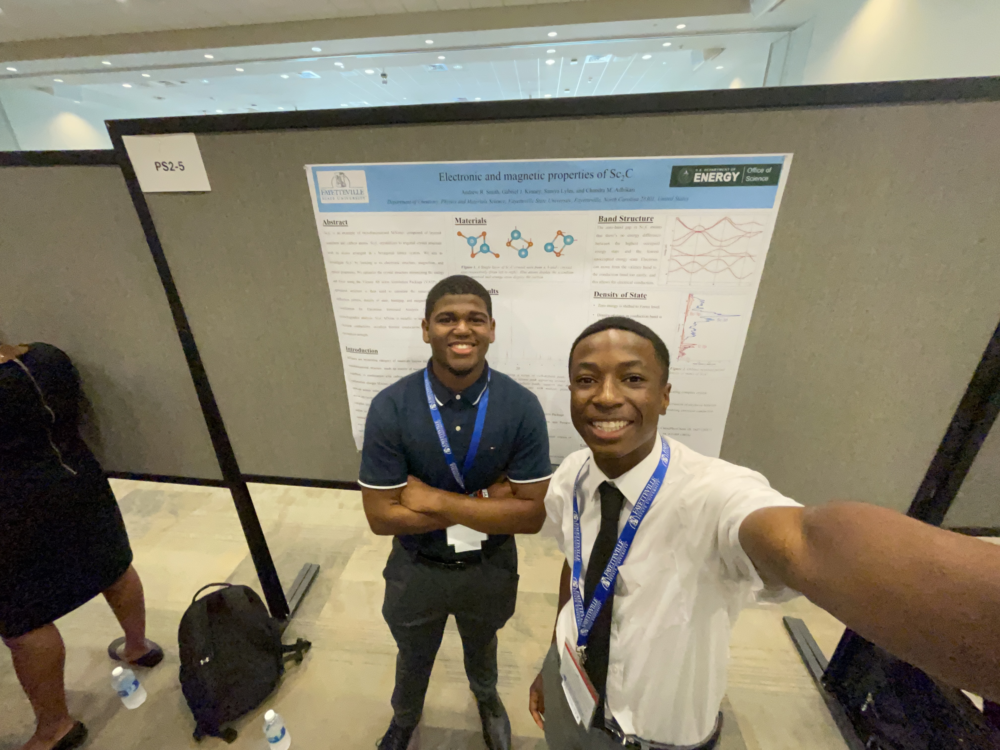

Materials Science · Computational Physics · 2024
🔬First-principles computational research on 2D materials conducted at Fayetteville State University, published in the Journal of Nepal Physical Society.
Presented original research on the electronic and magnetic properties of Scandium Carbide (Sc₂C) and (Ti,Ta)₂C MXenes at the Association of Nepali Physicists in America (ANPA) Conference 2024, supported by the U.S. Department of Energy.

First-principles Density Functional Theory (DFT) calculations on (Ti, Ta)₂C MXenes — a family of 2D transition metal carbides — examining their electronic structure, magnetism, and optical properties. All three MXenes (Ti₂C, TiTaC, Ta₂C) were found to be non-magnetic and metallic, with electronic structure dominated by the outermost d-orbitals of the transition metals and the 2p orbital of carbon.
Read Publication →MXenes are graphene-like two-dimensional early transition metal carbides, nitrides, or carbonitrides with a stoichiometric formula of Mₙ₊₁Xₙ, where M is an early transition metal (Ti, Ta, Cr, etc.), X is carbon or nitrogen, and n ≥ 1. They are synthesized via selective etching of aluminum from MAX-phase precursors such as Ti₂AlC and Ta₂AlC using hydrofluoric acid or lithium fluoride/hydrochloric acid mixtures.
MXenes have attracted significant research attention due to their exceptional electronic, optical, and electrochemical properties — including high electrical conductivity, high capacitance, and strong intercalability for lithium, sodium, and potassium ions — making them promising candidates for energy storage, electrocatalysis, water purification, and gas sensing.
Vienna Ab Initio Simulation Package (VASP) used for all Density Functional Theory calculations. Projector augmented wave (PAW) method with Perdew-Burke-Ernzerhof (PBE) generalized gradient approximation (GGA) for electron-electron exchange and correlation.
Plane wave cutoff energy of 520 eV. Convergence criteria: 10⁻⁵ eV for energy, 10⁻² eV/Å for force. Gaussian smearing width of 0.05 eV. k-mesh of 12×12×3 for structure optimization; 17×17×5 for DOS and optical spectra (Ti₂C and TiTaC); 12×12×12 and 17×17×17 for Ta₂C.
Crystallographic presentations made using VESTA (Visualisation for Electronic Structural Analysis). Initial crystal structures sourced from the Materials Project database.
Formation energies: Ef(Ti₂C) = −0.682 eV/atom, Ef(TiTaC) = −0.575 eV/atom, Ef(Ta₂C) = −0.438 eV/atom. Ti₂C is the most stable. All negative values confirm stability of the ordered double transition metal carbide TiTaC alongside its single-metal counterparts.
Electronic Structure
Optical Properties
This work was supported by the U.S. Department of Energy BES-RENEW award number DE-SC0024611 and published in the special issue of the Journal of Nepal Physical Society for ANPA Conference 2024.
In parallel work presented at conference, I co-researched the electronic and magnetic properties of Scandium Carbide (Sc₂C) — evaluating its viability as an anode material for sustainable battery applications. This work used VESTA for atomic structure modeling and VASP for electronic structure simulation.